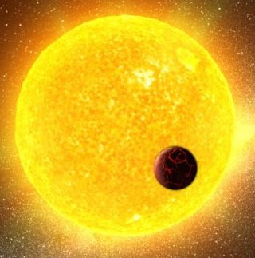

| NO. | CARACTERISTICAS |
|---|
| 1 | TEMPERATURA SUPERFICIAL:Las estrellas de tipo G tienen temperaturas superficiales que oscilan entre aproximadamente 5,300 y 6,000 Kelvin. |  |
| 2 | ESPECTRO:- Su espectro está dominado por líneas de absorción de metales ionizados y neutros, como el hierro (Fe I y Fe II), calcio (Ca I y Ca II) y líneas de hidrógeno menos prominentes que en las estrellas de tipo A y B.
- La presencia de líneas de absorción de elementos como el magnesio (Mg), silicio (Si) y oxígeno (O) también es común.
|
| 3 | COLOR:Son de color blanco-amarillento. |
| 4 | BRILLO:- Tienen una luminosidad moderada. El Sol, una estrella de tipo G2V, es el ejemplo más conocido y tiene una magnitud absoluta de aproximadamente +4.83.
- La luminosidad varía dentro del tipo G, pero en general, estas estrellas no son tan luminosas como las de tipo A y B.
|
| 5 | EJEMPLOS NOTABLES:- El Sol (G2V) en nuestro sistema solar.
- Alpha Centauri A (G2V) en el sistema estelar más cercano a la Tierra.
- Tau Ceti (G8V) en la constelación de Cetus.
|
| 6 | CICLO DE VIDA:Las estrellas de tipo G están en la secuencia principal durante la mayor parte de su vida, fusionando hidrógeno en helio en sus núcleos.
Tienen una vida útil de aproximadamente 10 mil millones de años. Después de agotar el hidrógeno en sus núcleos, evolucionan hacia gigantes rojas y finalmente se convierten en enanas blancas. |